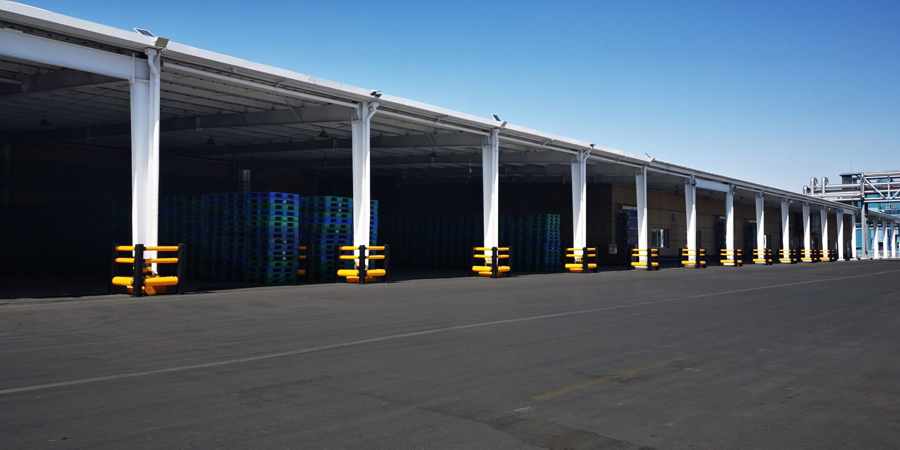
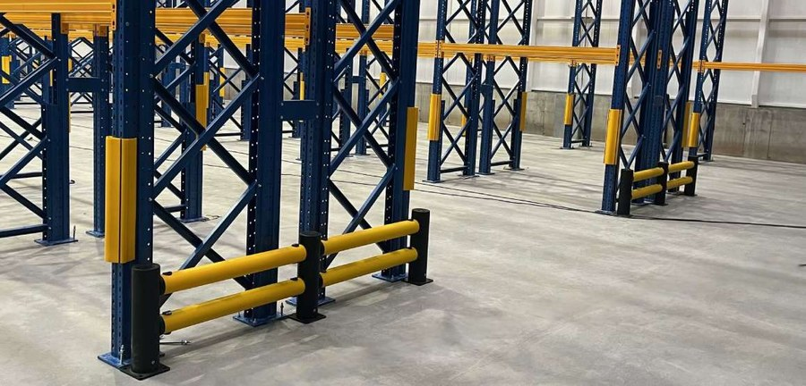

Where forklifts hit, things break.Where floors are slippery, people fall.
Polymer barriers and floor safety tape for factories and warehouses in Northern Vietnam's industrial parks. We survey on site.
Telling people "be careful" has never stopped a forklift. Barriers, floor lines and a separate walkway for people do.
Steel barriers dent, paint chips
One forklift hit and steel dents. Dented rails get cut out and replaced. Base plates pull loose.
Rack uprights get clipped
Forklifts turn at the aisle end and the forks clip the upright. The rack gets weaker, and the damage is hard to see.
People share the lane with forklifts
A high load blocks the view. You see the forklift. The forklift does not see you.
Slippery steps, total darkness in a power cut
Step edges are worn smooth. When the power goes out on the night shift, nobody can see the step edge.
Click each zone in the warehouse
Every zone has its own risk and its own fix. Where floor marking is enough, we say so.
 Photo: manufacturer
Photo: manufacturerWalkways and crossing points
A high pallet load blocks most of the driver's view. Electric forklifts run quietly. You only hear them when they are right next to you. People assume the driver has seen them.
How to stop it
Photo: manufacturerRack ends and rack uprights
Forklifts turn at the end of the aisle. The forks or the pallet clip a rack upright. Once an upright is dented, the whole rack bay must be inspected again.
How to stop itBuilding columns and door frames
The column stands right on the corner, and drivers take the corner tight. Forks scrape the roller door frame on every trip in and out.
How to stop it Photo: manufacturer
Photo: manufacturerDock doors and dispatch area
At dispatch time, forklifts come and go nonstop. Pallets waiting to ship spill into the walkway and push people into the forklift lane.
How to stop it Photo: manufacturer
Photo: manufacturerForklift parking and charging area
A forklift reverses into its bay and the rear hits the wall or the charging cabinet. The charging area is full of cables and electrical equipment.
How to stop it Photo: manufacturer
Photo: manufacturerStairs, ramps and wet floors
Step edges are worn smooth. Steel checker-plate treads get oily. The ramp to the warehouse door gets wet when it rains.
How to stop it Photo: manufacturer
Photo: manufacturerExit routes and low-light areas
A power cut hits on the night shift. Stairs and exit routes go pitch dark. Emergency lights are slow to come on, or never come on.
How to stop itOne stops collisions. One stops slips and falls.
Flexes on impact. Stands back up.
Pedestrian barriers, forklift barriers, column guards, rack upright guards, car stops, self-closing gates.
See all 12 barrier series Photo: manufacturer
Photo: manufacturerClear lanes. Exits you can see in the dark.
See the 4 tape typesseries of barriers, rack and column guards, and gates, chosen spot by spot.
The manufacturer's maintenance guide has no repainting step.
See what barriers and tape do in real tests
Don't replace every steel barrier with polymer.
And don't keep steel where it gets hit every day. The rule is simple: low traffic, keep steel. Constant impacts, switch to polymer.
Low traffic, light vehicles
- Side aisles with little traffic
- Hand carts, pallet trucks
- Lower upfront cost
Constant impacts
- Rack ends
- Corners and intersections inside the warehouse
- Dock doors, dispatch areas
We don't send a catalogue and wait.
We come to your floor, stand beside the forklift lane and point out every spot where a collision can happen.
 Photo: manufacturer
Photo: manufacturerSend photos of the spot
Photograph where things get hit or where the floor gets slippery. Note the rough length in meters. Send it through the form or WhatsApp.
We review and suggest
Thien Khoi reviews the photos and suggests the barrier series or tape type for each spot.
Site survey
We come to your site, watch forklift and foot traffic during a live shift, take measurements, then recommend a fix for each zone.
Urgent spots first
The rest is done in phases. No need to shut down the whole area.
Each article: one thing to do now
Photo: manufacturerForklift barriers: steel or polymer
Don't replace them all. And don't keep steel where it gets hit every day. A rule for choosing, section by section.
Separating people from forklifts: 3 levels
Floor lines are only the lowest level.
Power cut. The tape still glows.
Put photoluminescent tape in these three spots first.

Send photos of where impacts and slips happen. We come to your site.
Factories and warehouses in Hanoi and the northern provinces.